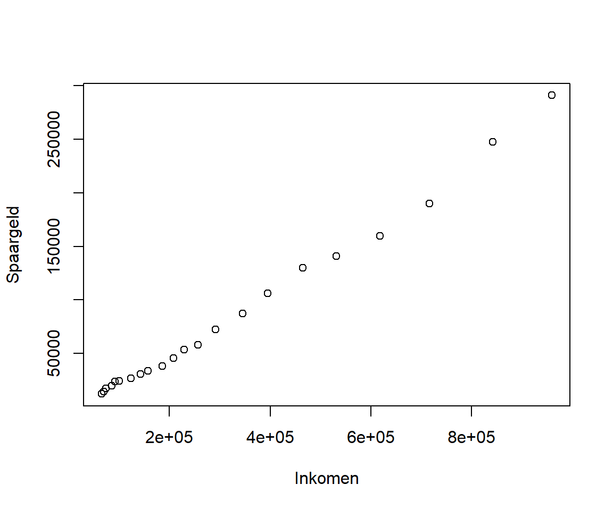
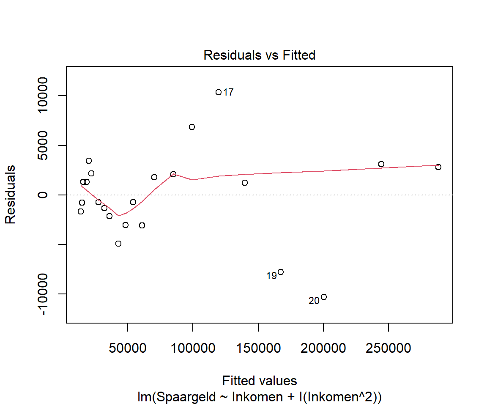
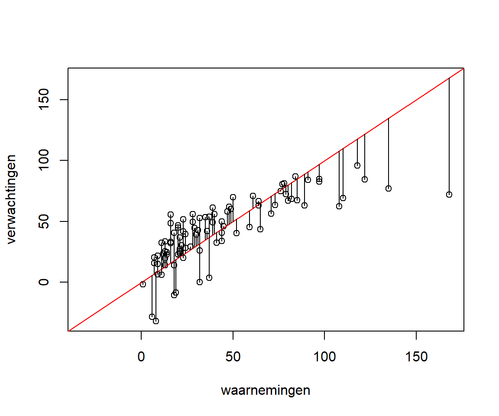

mydata <- data.frame(ervaring = c(5, 10, 8, 15, 12),
inkomen = c(60, 80, 90, 120, 100))
mydata ervaring inkomen
1 5 60
2 10 80
3 8 90
4 15 120
5 12 100In dit voorbeeld [3, pag. 303] wordt het verband onderzocht tussen het inkomen (x €1000) en het aantal jaren ervaring van een groep managers.
mydata <- data.frame(ervaring = c(5, 10, 8, 15, 12),
inkomen = c(60, 80, 90, 120, 100))
mydata ervaring inkomen
1 5 60
2 10 80
3 8 90
4 15 120
5 12 100Allereerst wordt een spreidingsdiagram gemaakt.
plot(inkomen ~ ervaring, data = mydata,
xlab = "Ervaring (jaren)", ylab = "Inkomen (x €1000)")Opstellen lineair model: \(inkomen = b_0 + b1 * ervaring\)
model <- lm(inkomen ~ ervaring, data = mydata)
summary(model)
Call:
lm(formula = inkomen ~ ervaring, data = mydata)
Residuals:
1 2 3 4 5
-2.41 -10.00 11.03 2.41 -1.03
Coefficients:
Estimate Std. Error t value Pr(>|t|)
(Intercept) 34.83 12.26 2.84 0.066 .
ervaring 5.52 1.16 4.75 0.018 *
---
Signif. codes: 0 '***' 0.001 '**' 0.01 '*' 0.05 '.' 0.1 ' ' 1
Residual standard error: 8.84 on 3 degrees of freedom
Multiple R-squared: 0.883, Adjusted R-squared: 0.844
F-statistic: 22.6 on 1 and 3 DF, p-value: 0.0177De regressievergelijking wordt dus \(inkomen = 34.828 + 5.517*ervaring\)
De geschatte waarden (berekend volgens de regressievergelijking) en residuen zijn
model$fitted.values 1 2 3 4 5
62.4 90.0 79.0 117.6 101.0 model$residuals 1 2 3 4 5
-2.41 -10.00 11.03 2.41 -1.03 plot(model$residuals,
main = "Residuen model Inkomen-Ervaring", ylab = "Residuen")
abline(h = mean(model$residuals))Je kunt zien dat de residuen willekeurig verdeeld zijn en het gemiddelde nagenoeg 0 is.
Van 12 kinderen is de leeftijd (jaren) en lengte (cm bepaald). Maak een model waarbij de lengte verklaard wordt uit de leeftijd.
kind <- data.frame(leeftijd = seq(18,29),
lengte = c(76.1,77.0,78.1,78.2,78.8,79.7,79.9,81.1,81.2,81.8,82.8,83.5))
# spreidingsdiagram
plot(lengte ~ leeftijd, data = kind,
xlab = "Leeftijd (maanden)", ylab = "Lengte (cm)")Het model wordt \(\text{lengte} = b_0 + b_1\times\text{leeftijd}\)
kind.model <- lm(lengte ~ leeftijd, data = kind)
summary(kind.model)
Call:
lm(formula = lengte ~ leeftijd, data = kind)
Residuals:
Min 1Q Median 3Q Max
-0.2724 -0.2425 -0.0276 0.1601 0.4724
Coefficients:
Estimate Std. Error t value Pr(>|t|)
(Intercept) 64.9283 0.5084 127.7 < 2e-16 ***
leeftijd 0.6350 0.0214 29.7 4.4e-11 ***
---
Signif. codes: 0 '***' 0.001 '**' 0.01 '*' 0.05 '.' 0.1 ' ' 1
Residual standard error: 0.256 on 10 degrees of freedom
Multiple R-squared: 0.989, Adjusted R-squared: 0.988
F-statistic: 880 on 1 and 10 DF, p-value: 4.43e-11De regressievergelijking wordt dus \(\text{lengte} = 64.9283 + 0.635\times\text{leeftijd}\).
Het model wordt nu uitgebreid door ook het aantal broers en zussen (variabele broerzus) in de formule op te nemen. het model wordt dan
\(\text{lengte} = b_0 + b_1\times\text{leeftijd} + b_2\times\text{broerzus}\)
library(dplyr)
kind2 <- kind %>% mutate(broerzus = c(1, 2, 3, 2, 0, 1, 5, 0, 1, 4, 1, 5))
kind2.model <- lm(lengte ~ leeftijd + broerzus, data = kind2)
summary(kind2.model)
Call:
lm(formula = lengte ~ leeftijd + broerzus, data = kind2)
Residuals:
Min 1Q Median 3Q Max
-0.2630 -0.2246 -0.0202 0.1610 0.4975
Coefficients:
Estimate Std. Error t value Pr(>|t|)
(Intercept) 64.9055 0.5353 121.26 9.0e-16 ***
leeftijd 0.6375 0.0234 27.25 5.9e-10 ***
broerzus -0.0177 0.0473 -0.37 0.72
---
Signif. codes: 0 '***' 0.001 '**' 0.01 '*' 0.05 '.' 0.1 ' ' 1
Residual standard error: 0.268 on 9 degrees of freedom
Multiple R-squared: 0.989, Adjusted R-squared: 0.986
F-statistic: 402 on 2 and 9 DF, p-value: 1.58e-09De coëfficient voor de nieuwe verklarende variabele broerzus is negatief. Voor elke broer/zus meer neemt de lengte met 0.02 cm af.
Voor leeftijd is de p-waarde significant, deze is dus een goede voorspeller voor lengte. Maar de p-waarde voor broerzus (het aantal broers en zussen) is niet significant, deze variabele past dus niet goed in het model.
sparen <- read.csv("data/inkomen-spaargeld.csv")
head(sparen) Jaar Spaargeld Inkomen
1 1974 12298 64968
2 1975 14196 69233
3 1976 17320 73824
4 1977 19995 85267
5 1978 23601 91507
6 1979 24213 99632plot(Spaargeld ~Inkomen, data = sparen)
SpaargeldInkomenAlgemene vorm regressievergelijking: \(Spaargeld = b_0 + b_1 * Inkomen\)
Een lineaire relatie is in de grafiek duidelijk zichtbaar.
model.sparen <- lm(Spaargeld ~ Inkomen, data = sparen)
summary(model.sparen)
Call:
lm(formula = Spaargeld ~ Inkomen, data = sparen)
Residuals:
Min 1Q Median 3Q Max
-13036 -4959 -317 5368 16969
Coefficients:
Estimate Std. Error t value Pr(>|t|)
(Intercept) -1.10e+04 2.46e+03 -4.47 0.00024 ***
Inkomen 2.97e-01 6.01e-03 49.40 < 2e-16 ***
---
Signif. codes: 0 '***' 0.001 '**' 0.01 '*' 0.05 '.' 0.1 ' ' 1
Residual standard error: 7330 on 20 degrees of freedom
Multiple R-squared: 0.992, Adjusted R-squared: 0.991
F-statistic: 2.44e+03 on 1 and 20 DF, p-value: <2e-16De vergelijking van de regressielijn wordt dan \(Spaargeld = -10990 + 0.297 * Inkomen\)
De p-waarde voor Inkomen is significant (< 0.05) en dus is de variabele significant voor het voorspellen van Spaargeld.
Adjusted R-squared: 0.9915 houdt in dat het model 99% van de variatie in de gegevens verklaart.
Diagnostische grafieken
plot(model.sparen)
Je hebt nu drie keuzes:
De laatste twee keuzes worden verder geanalyseerd.
Regressievergelijking: \(Spaargeld = b_0 + b_1*Inkomen + b_2*Inkomen^2\)
Om in R een variabele \(x^2\) te maken moet je deze definieren met I(x^2).
Een alternatief is met gebruik van de polynoomfunctie poly(x, degree=2, raw = TRUE). Deze laatste heeft als voordeel dat je eenvoudiger hogere graads polynomen kunt maken.
model2.sparen <- lm(Spaargeld ~ Inkomen + I(Inkomen^2), data = sparen)
# model2.sparen <- lm(Spaargeld ~ poly(Inkomen, degree=2, raw = TRUE), data = sparen)
summary(model2.sparen)
Call:
lm(formula = Spaargeld ~ Inkomen + I(Inkomen^2), data = sparen)
Residuals:
Min 1Q Median 3Q Max
-10304 -2027 252 2149 10353
Coefficients:
Estimate Std. Error t value Pr(>|t|)
(Intercept) -5.94e+02 2.48e+03 -0.24 0.81
Inkomen 2.19e-01 1.49e-02 14.64 8.4e-12 ***
I(Inkomen^2) 8.56e-08 1.58e-08 5.42 3.1e-05 ***
---
Signif. codes: 0 '***' 0.001 '**' 0.01 '*' 0.05 '.' 0.1 ' ' 1
Residual standard error: 4710 on 19 degrees of freedom
Multiple R-squared: 0.997, Adjusted R-squared: 0.996
F-statistic: 2.97e+03 on 2 and 19 DF, p-value: <2e-16plot(model2.sparen)
De diagnostische grafieken zijn nu veel beter. Residuen zijn bijna horizontaal en goed verspreid. Verspreiding is bijna uniform en geen enkele punt heeft een teveel aan leverage. De Q-Q grafiek laat echter zien dat enkele punten niet op de Normaal lijn staan, maar dat kan acceptabel zijn.
Waarneming 22 wordt uitgesloten.
sparen21 <- sparen[1:21,]
model.sparen21 <- lm(Spaargeld ~ Inkomen, data = sparen21)
summary(model.sparen21)
Call:
lm(formula = Spaargeld ~ Inkomen, data = sparen21)
Residuals:
Min 1Q Median 3Q Max
-8601 -3585 -1088 4294 15186
Coefficients:
Estimate Std. Error t value Pr(>|t|)
(Intercept) -8.69e+03 2.06e+03 -4.21 0.00047 ***
Inkomen 2.86e-01 5.69e-03 50.25 < 2e-16 ***
---
Signif. codes: 0 '***' 0.001 '**' 0.01 '*' 0.05 '.' 0.1 ' ' 1
Residual standard error: 5840 on 19 degrees of freedom
Multiple R-squared: 0.993, Adjusted R-squared: 0.992
F-statistic: 2.53e+03 on 1 and 19 DF, p-value: <2e-16plot(model.sparen21)Alle diagnostische grafieken lijken niet goed, ze zijn zelfs slechter dan het oorspronkelijke model.
Tot zo ver komt het model met de kwadratische term het beste voort uit de analyse van de diagnostische grafieken.
In dit voorbeeld wordt de relatie tussen druk en temperatuur onderzocht.
druktemp <- data.frame(temp = seq(from = 10, to = 100, by = 10),
druk = c(18.5, 24.9, 30.3, 43.7, 80.1, 118.5, 169.9, 228.3, 302.7,385.1))
# lineair model
model1 <- lm(druk ~ temp, data = druktemp)
# Spreidingsdiagram met regressielijn
plot(druk ~ temp, data = druktemp)
abline(reg = model1)
summary(model1) # samenvatting model
Call:
lm(formula = druk ~ temp, data = druktemp)
Residuals:
Min 1Q Median 3Q Max
-41.9 -34.7 -10.9 24.7 63.5
Coefficients:
Estimate Std. Error t value Pr(>|t|)
(Intercept) -81.50 29.14 -2.80 0.023 *
temp 4.03 0.47 8.58 2.6e-05 ***
---
Signif. codes: 0 '***' 0.001 '**' 0.01 '*' 0.05 '.' 0.1 ' ' 1
Residual standard error: 42.7 on 8 degrees of freedom
Multiple R-squared: 0.902, Adjusted R-squared: 0.89
F-statistic: 73.7 on 1 and 8 DF, p-value: 2.62e-05Beide \(R^2\) waarden zijn goed. Idealiter zouden de residuen in een grafiek er willekeurig uit moeten zien.
plot(model1$residuals, pch = 16, col = "red",
main = "Residuen Druk~Temperatuur", ylab = "Residuen")Je ziet dat het gemiddelde wel ongeveer nul is, maar de waarden vertonen geen willekeurig karakter, het diagram ziet er als een parabool uit. Dat betekent dat er misschien een verborgen patroon is dat niet door het lineaire model wordt meegenomen. wat je nu kunt doen is de variabele transformeren of een term toevoegen, bijv. \(x^2, x^3, ln(x), ln(x+1), \sqrt(x), \frac{1}{x}, exp(x)\).
Vanwege het paraboolkarakter van de residuen wordt een kwadratische term toegevoegd.
Om verwarring te voorkomen wordt de hoofdletter I voor de transformatie gezet.
model2 <- lm(druk ~ temp + I(temp^2), data = druktemp)
summary(model2)
Call:
lm(formula = druk ~ temp + I(temp^2), data = druktemp)
Residuals:
Min 1Q Median 3Q Max
-4.605 -1.633 0.555 1.180 4.827
Coefficients:
Estimate Std. Error t value Pr(>|t|)
(Intercept) 33.75000 3.61559 9.33 3.4e-05 ***
temp -1.73159 0.15100 -11.47 8.6e-06 ***
I(temp^2) 0.05239 0.00134 39.16 1.8e-09 ***
---
Signif. codes: 0 '***' 0.001 '**' 0.01 '*' 0.05 '.' 0.1 ' ' 1
Residual standard error: 3.07 on 7 degrees of freedom
Multiple R-squared: 1, Adjusted R-squared: 0.999
F-statistic: 7.86e+03 on 2 and 7 DF, p-value: 1.86e-12De p-waarden zijn nu veel kleiner geworden, De \(R^2\)-waarden zijn bijna gelijk aan 1 geworden. Dus het model is behoorlijk verbeterd. Van dit nieuwe model wordt nu ook een grafiek van de residuen gemaakt.
plot(model2$residuals, pch = 16, col = "red",
main = "Druk~Temperatuur model met kwadratische term", ylab = "Residuen")Er is nu geen patroon te zien, de residuen zijn behoorlijk willekeurig. Het model is nu goed.
De dataset economiedata.csv bevat een gefingeerde verzameling economische gegevens met de variabelen Jaar, Maand, Rentepercentage, Werkloosheidspercentage en Aandelenindex. Maak een lineair model van Aandelenindex op basis van Rentepercentage en Werkloosheidspercentage.
AandelenindexRentepercentageWerkloosheidspercentageData
economiedata <- read.csv("data/economiedata.csv")
head(economiedata) Jaar Maand Rentepercentage Werkloosheidspercentage Aandelenindex
1 2016 1 1.75 6.1 719
2 2016 2 1.75 6.2 704
3 2016 3 1.75 6.2 822
4 2016 4 1.75 5.9 876
5 2016 5 1.75 6.1 866
6 2016 6 1.75 6.1 884Allereerst wordt visueel beoordeeld of er een (lineaire) relatie is tussen de afhankelijke variabele en elk van de onafhankelijke variabelen afzonderlijk.
plot(Aandelenindex ~ Rentepercentage, data = economiedata)
Er is een positief lineair verband te zien, als het Rentepercentage omhoog gaat, gaat ook de Aandelenindex omhoog.
plot(Aandelenindex ~ Werkloosheidspercentage, data = economiedata)
Er is een negatief lineair verband te zien, als het Werkloosheidspercentage omhoog gaat, gaat de Aandelenindex omlaag.
Model
model <- lm(Aandelenindex ~ Rentepercentage + Werkloosheidspercentage,
data = economiedata)
summary(model, correlation = TRUE) # met extra een matrix van de correlaties
Call:
lm(formula = Aandelenindex ~ Rentepercentage + Werkloosheidspercentage,
data = economiedata)
Residuals:
Min 1Q Median 3Q Max
-158.21 -41.67 -6.25 57.74 118.81
Coefficients:
Estimate Std. Error t value Pr(>|t|)
(Intercept) 1798 899 2.00 0.0586 .
Rentepercentage 346 111 3.10 0.0054 **
Werkloosheidspercentage -250 118 -2.12 0.0460 *
---
Signif. codes: 0 '***' 0.001 '**' 0.01 '*' 0.05 '.' 0.1 ' ' 1
Residual standard error: 70.6 on 21 degrees of freedom
Multiple R-squared: 0.898, Adjusted R-squared: 0.888
F-statistic: 92.1 on 2 and 21 DF, p-value: 4.04e-11
Correlation of Coefficients:
(Intercept) Rentepercentage
Rentepercentage -0.96
Werkloosheidspercentage -1.00 0.93 Dit voorbeeld is geïnspireerd door een artikel in Data Science Blog [7] en gebruikt de in package datasets aanwezige gegevensverzameling airquality. Deze dataset bevat metingen van de luchtkwaliteit in New York van mei tot september 1973. Er zijn 153 waarnemingen van 6 variabelen:
Ozone - gemiddelde hoeveelheid ozon in parts per billion (ppb)
Solar.R - zonnestraling in Langleys (lang)
Wind - gemiddelde windsnelheid in miles per hour (mph)
Temp - maximale dagelijkse temperatuur in graden Fahrenheit op La Guardia Airport.
Month - maand (nummer 1-12)
Day - dag ( nummer 1-31)
Voor de analyse kunnen maand en dag worden weggelaten. Verder worden de waarnemingen met ontbrekende waarden verwijderd.
library(dplyr)
goed <- complete.cases(airquality)
aqdata <- airquality[goed,] %>%
select(Ozone, Solar.R, Wind, Temp)
str(aqdata)'data.frame': 111 obs. of 4 variables:
$ Ozone : int 41 36 12 18 23 19 8 16 11 14 ...
$ Solar.R: int 190 118 149 313 299 99 19 256 290 274 ...
$ Wind : num 7.4 8 12.6 11.5 8.6 13.8 20.1 9.7 9.2 10.9 ...
$ Temp : int 67 72 74 62 65 59 61 69 66 68 ...Onderzoeksvraag
Kun je het ozonniveau voorspellen op basis van zonnestraling, windsnelheid en temperatuur?
Verkenning data
Om te zien of de aannames van het lineaire model geschikt zijn voor de beschikbare gegevens, worden de correlaties tussen de variabelen bekeken: een scatterplot en de correlatiecoëfficienten.
plot(aqdata)
cor(aqdata) Ozone Solar.R Wind Temp
Ozone 1.000 0.348 -0.612 0.699
Solar.R 0.348 1.000 -0.127 0.294
Wind -0.612 -0.127 1.000 -0.497
Temp 0.699 0.294 -0.497 1.000Conclusies
Ozone heeft een negatieve correlatie met Wind.
Ozone heeft een positievecorrelatie met Temp.
Het zou dus mogelijk moeten zijn om een lineair model te maken dat het ozonniveau voorspelt met de kemerken.
Splitsing in training en test set
set.seed(123)
trainRijnummers <- createDataPartition(y = aqdata$Ozone, p=0.8, list = FALSE)
trainData <- aqdata[trainRijnummers, ]
testData <- aqdata[-trainRijnummers, ]Lineair model
model <- lm(Ozone ~ Solar.R + Wind + Temp, data = trainData)
model.samenvatting <- summary(model)
model.samenvatting
Call:
lm(formula = Ozone ~ Solar.R + Wind + Temp, data = trainData)
Residuals:
Min 1Q Median 3Q Max
-39.83 -14.00 -3.95 9.98 95.80
Coefficients:
Estimate Std. Error t value Pr(>|t|)
(Intercept) -66.0175 27.4527 -2.40 0.018 *
Solar.R 0.0739 0.0284 2.60 0.011 *
Wind -3.3171 0.7500 -4.42 2.8e-05 ***
Temp 1.6285 0.3065 5.31 8.4e-07 ***
---
Signif. codes: 0 '***' 0.001 '**' 0.01 '*' 0.05 '.' 0.1 ' ' 1
Residual standard error: 21.9 on 86 degrees of freedom
Multiple R-squared: 0.596, Adjusted R-squared: 0.582
F-statistic: 42.3 on 3 and 86 DF, p-value: <2e-16De mediaan van de residuen is -3.952, wat suggereert dat het model over het algemeen wat hogere ozonwaarden voorspelt dan waargenomen. De grote maximumwaarde geeft echter aan dat sommige uitbijtervoorspellingen ook veel te laag zijn
Residu = waargenomen - verwacht. Ofwel verwacht = waargenomen - residu. Omdat de mediaanwaarde ongeveer -4 is, is de verwachte waarde = waargenomen waarde + 4.
Residuen
Kijken naar getallen als mediaan en maximum voor de residuen kan een beetje abstract zijn. Wanneer je de verwachte waarden uitzet tegen de waargenomen waarden krijg je een betere indruk van de kwaliteit van het model.model
residuen <- model$residuals # alternatief: residuals(model)
waarnemingen <- trainData$Ozone
verwachtingen <- model$fitted.values
waardenbereik <- range(verwachtingen, waarnemingen)
plot(verwachtingen ~ waarnemingen,
xlim = waardenbereik, ylim = waardenbereik)
abline(0, 1, col = "red")
segments(waarnemingen, verwachtingen, waarnemingen, verwachtingen+residuen)
In de grafiek is te zien dat er ook negatieve ozonwaarden voorspeld worden. Dit kan natuurlijk niet omdat ozonconcentraties niet onder 0 kunnen komen. In een later stadium zal daarom een beter model gemaakt moeten worden waarbij dat niet gebeurt,
Coëfficienten
model$coefficients # alternatief: coefficients(model)(Intercept) Solar.R Wind Temp
-66.0175 0.0739 -3.3171 1.6285 De intercept van het model heeft een vrij lage waarde. Dit is de waarde die het model voorspelt wanneer de waarden van alle voorspelvariabelen nul zijn.
De lage coëfficiënt voor Solar.R geeft aan dat zonnestraling geen belangrijke rol speelt bij het voorspellen van ozonniveaus, wat niet als een verrassing komt omdat het in de verkennende analyse geen grote correlatie met het ozonniveau liet zien.
De coëfficiënt voor Temp geeft aan dat de ozonniveaus hoog zijn als de temperatuur hoog is (er vormt zich dan sneller ozon).
De coëfficiënt voor Wind geeft aan dat de ozonniveaus laag zullen zijn voor hogere windsnelheden (de ozon zal dan worden weggeblazen).
De overige waarden die bij de coëfficiënten horen, geven informatie over de statistische zekerheid van de schattingen.
model.samenvatting$coefficients Estimate Std. Error t value Pr(>|t|)
(Intercept) -66.0175 27.4527 -2.40 1.83e-02
Solar.R 0.0739 0.0284 2.60 1.09e-02
Wind -3.3171 0.7500 -4.42 2.84e-05
Temp 1.6285 0.3065 5.31 8.37e-07Voor een verbeterd model zie [6]